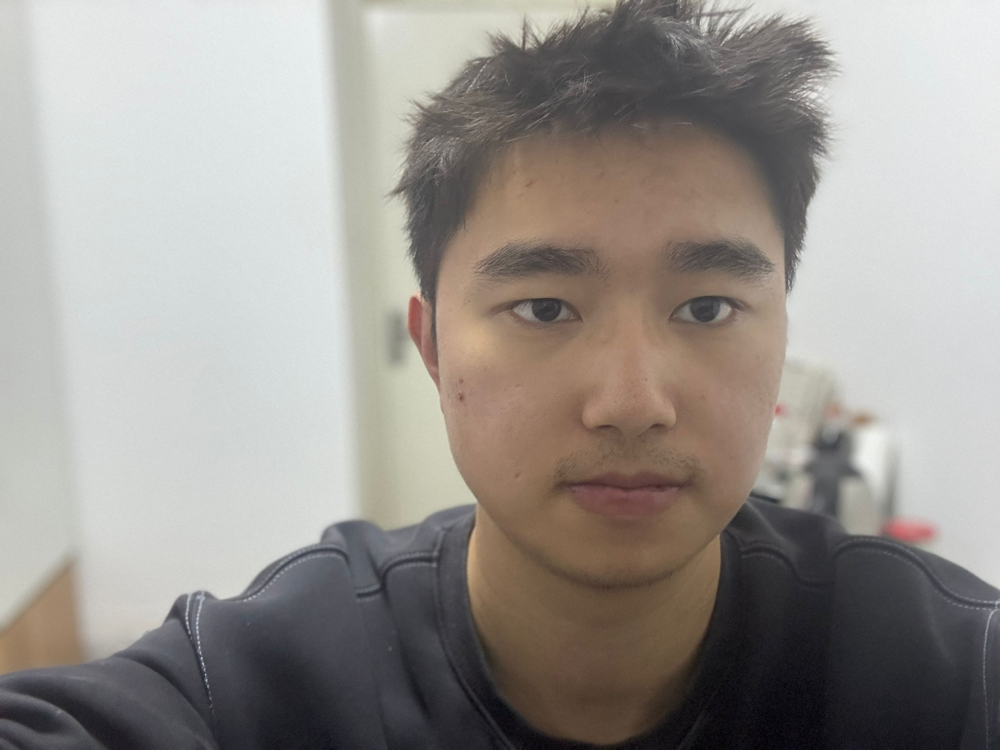
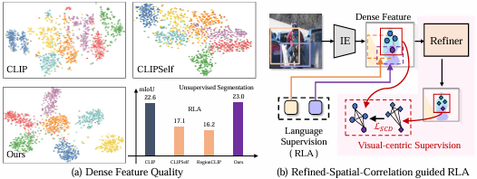
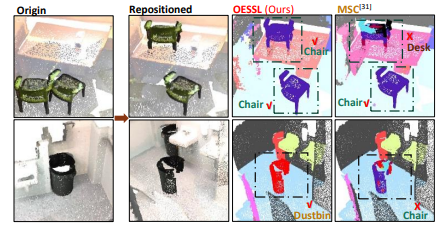
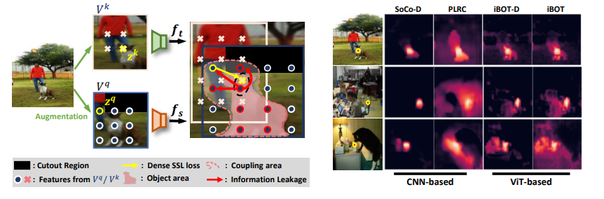
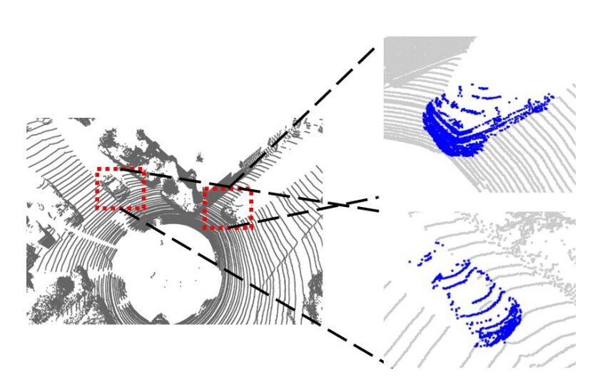

AlignDrive: Aligned Lateral-Longitudinal Planning for End-to-End Autonomous Driving
NeurIPS 2026 Paper · Project Page · Code

Ph.D. Candidate in Computer Science, Xi'an Jiaotong University
Researcher in Autonomous Driving & Multimodal Learning
Hi, I'm Yanhao Wu, a Ph.D. candidate in Computer Science at Xi'an Jiaotong University, supervised by Prof. Ke Wei and Dr. Tong Zhang. I expect to graduate in December 2026.
My research focuses on autonomous driving, with an emphasis on learning-based planning, closed-loop driving simulation, and self-supervised representation learning. I developed UMGen, a generative framework for closed-loop driving simulation, and AlignDrive, an aligned lateral-longitudinal planning method for end-to-end autonomous driving.
I also have two years of industry research experience at Horizon Robotics, working on large-scale learning-based autonomous driving systems.
Google Scholar / GitHub / 知乎 / 中文版
* Equal contribution. My name is underlined.
NeurIPS 2026 Paper · Project Page · Code
CVPR 2025 Paper · Project Page · Code

ICLR 2025 Paper

CVPR 2024 Paper · Project Page · Code

ICLR 2024 Paper

CVPR 2023 Paper · Project Page · Code
Intern, Perception R&D Department
Ph.D. Candidate in Computer Science
B.S. in Automation · Rank 1/102